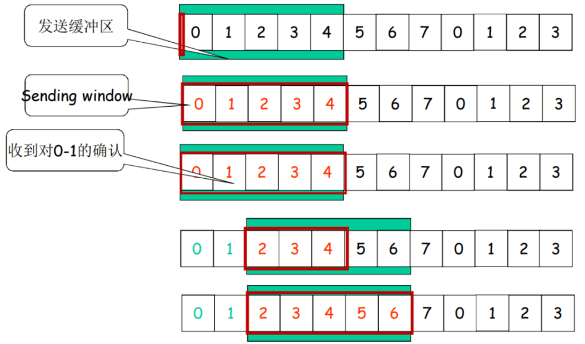
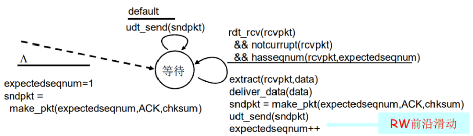
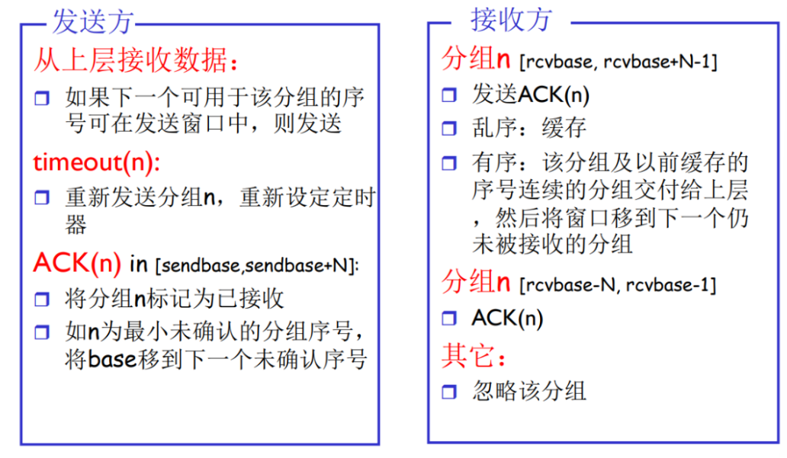
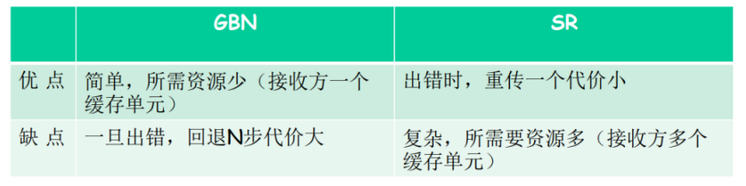

计算机网络——第三章：传输层
传输层
传输层概述
- 传输协议处于操作系统内核之中，运行在终端（路由器没有传输层与应用层）
- 发送方传输层：切割messages,封装为segments
- 接收方传输层：组装segments为messages
- 传输层协议为运行在不同主机上的应用进程之间提供了**逻辑通信 （logic communication)**功能。
- 传输层有两个可选协议：TCP, UDP
和网络层对比
传输层：为两端计算机的进程提供传输通道
网络层：为两个主机提供传输通道
传输协议
- TCP:可靠、按序传输
- 阻塞控制
- 流量控制
- 连接设置
- UDP:不可靠、乱序传输
- 尽力交付(best-effort)
- 都不能提供的服务
- 延迟保证
- 带宽保证
- 协议对应关系：
- TCP: HTTP, SWTP&POP3, routing, FTP
- UDP: DNS, SNMP
多路复用(multiplexing)与分解(demultiplexing)
复用：数据汇聚的过程：
- 应用层->socket
- 在源主机从不同套接字中收集数据块，并为每个数据块封装上首部信息（这将在以后用于分解)从而生成报文段，然后将报文段传递到网络
分解：数据拆分的过程：
- 传输层->socket
- 传输层检查segment中一些字段,标识出接收套接字，进而将报文段定向到该套接字。
分解原理
主机使用IP地址和端口号将segment定向到对应的socket，分别为src, dest
- UDP只用dest port区分
- TCP使用4个数据区分：src IP, src port, dest IP, dest port
TCP和UDP的端口独立，即可以有两个占用80端口的进程（分别用TCP,UDP）
- 端口号：0-65535
- 0-1023：well-known port ，一般供给服务器使用
- 1024-65535：随机分配给需要网络的进程
UDP:无连接传输层协议
User Datagram Protocol [RFC 768]
- 不可靠，可能丢包或者乱序提交给应用层进程
- 不需要事先连接
- 无握手过程
- 每个UDP segment独立处理：message与segment一一对应（TCP将相近的发往同个dest的msg合并为一个segment:m对n）
- 可靠的UDP: 应用层代码中增添可靠性检测
报文结构
包头：4个16位字段
length:记录整个包（含包头）的大小msg+ 8 byte。超过length UDP会把包丢掉
小包头，无阻塞控制
校验和
首先发送方要计算checksum
- 将段的内容看作16bits的整数
- 校验和计算：计算所有整数的和，进位加到和的后面，将得到的值按位取反，得到校验和
- 发送方把checksum放入header的校验和字段里面
接着，当接收方收到后，验证:
- 计算所收到的段的校验和
- 把它和校验和字段进行对比
- 不相等即发现了错误，相等并不代表一定没有错误
相等只代表我们没有检测出错误，但其实可能有错误，比如有2个位发生翻转的情况就检测不出来。
可靠数据传输原理
可靠数据传输协议（reliable data transfer protocol）：数据可以通过一条可靠的信道进行传输。借助于可靠信道，传输数据比特就不会受到损坏(由0变为1,或者相反)或丢失，而且所有数据都是按照其发送顺序进行交付。这恰好就是TCP向调用它的因特网应用所提供的服务模型。
由于可靠数据传输协议的下层协议也许是不可靠的，因此这是一项困难的任务。例如，TCP是在不可靠的（IP）端到端网络层之上实现的可靠数据传输协议。更一般的情况是，两个可靠通信端点的下层可能是由一条物理链路（如在链路级数据传输协议的场合下）组成或是由一个全球互联网络（如在运输级协议的场合下）组成。然而，就我们的目的而言，我们可将较低层直接视为不可靠的点对点信道。
构造RDT
一步步地研究下述一系列协议，它们一个比一个更为复杂，最后得到一个无错、可靠的数据传输协议。
- RDT涉及的4个动作：
假设RDT仅考虑单向数据发送（不会同时都向对方发数据，双向的数据传输问题实际上是 2 个单向数据传输问题的综合）。
使用有限状态机来描述RDT：
- 在该状态时，下一个状态只由下一个事件唯一决定
- 虚线箭头：初始化
- 横线：上面是事件发生，下面是该对象的反应动作
- $\Lambda$ 符号：NULL，什么都不做
rdt_send()和deliver_date()本层和上层的接口udt_send()和udt_rcv()本层和下层的接口
rdt 1.0 经完全可靠信道
发送方和接收方有限状态机的定义：
rdt 2.0 经具有比特差错信道
重传机制：
- 肯定确认 *acknowledgements (ACKs)*： OK
- 否定确认 *negative acknowledgements (NAKs)*：请求重传
基于这样重传机制的可靠数据传输协议称为自动重传请求 （Automatic.Repeat reQuest，ARQ)协议。
rdt2.0中提供了新功能：
- 错误检测：checksum，用来检测比特差错
- 反馈：control msgs (ACK,NAK) from receiver to sender
有限状态机定义($\Lambda 表示action为空$ )：
rdt 2.1
如果rdt2.0 的ACK包出现比特错误。发送方不知道接受方是否成功递交，简单重发又会可能出现重复递交问题。因此rdt2.1用来处理重复递交问题。发送方会给每个包加入一个序列号（sequence number：1bit，只有0/1），接收方会丢掉重复包.
- 因为rdt为停等协议，每次仅处理一个包，因此避免重复递交仅需要两个不同的序列号（如果是流水线分组，需要更多位）
- 发送方：
- 在分组中加入序列号
- 两个序列号（0，1）就足够了
- 必须检测 ACK/NAK 是否出错（需要 EDC，error-detection and-correction）
- 状态数变成了两倍
- 必须记住当前分组的序列号为 0 还是 1
- 接收方：
- 必须检测接收到的分组是否是重复的
- 状态会指示希望接收到的分组的序号为 0 还是 1
- 注意：接收方并不知道发送方是否正确收到了其 ACK/NAK
- 没有安排确认的确认
- 只是根据对方下次发过来的分组，才知道有没有收到
- 必须检测接收到的分组是否是重复的
发送方：
接受方：
运行：
rdt2.2：无 NAK 的协议
不需要NAK的协议，在ACK中带有序列号。接收方收到重复的ACK（接收方发送序列号相反的ACK）代表NAK。
引入2.2原因：为了继续升级为TCP做准备，由于TCP为pipeline协议，多个包在链路上发送可能会乱序，如果采用NAK和ACK，发送方无法鉴别反馈包针对的是哪个包，因此采用带编号的ACK，能够区分反馈的是哪个包
- 功能同 rdt2.1，但只使用 ACK（ACK要编号）
- 接收方对最后正确接收的分组发 ACK，以替代 NAK
- 接收方必须显式地包含被正确接收分组的序号
- 把当前分组的否定确认用前面一个分组的肯定确认来代替，这样就不用 NAK 了
- 当收到重复的 ACK（如：再次收到 ack0）时，发送方与收到 NAK 采取相同的动作：重传当前分组
运行：
rdt 3.0经具有比特差错的丢包信道
假设除了比特差错外还存在丢包。
- 会导致死锁
- 机制还不够处理这种状况
- 校验和
- 序列号
- ACK
- 重传
解决方案：
发送方等待接收ACK一段时间，没有收到ACK便重传
如果ACK仅是超时到达而不是丢包
- 重传会导致重复递交，带序列号的ACK会处理该问题
- 接收方必须指明被正确接收的序列号
需要一个倒计数定时器
实际上还是存在问题：延迟足够多时间，重发后即便有序列号，还是会导致数据重复（见下面RDT缺陷）
发送方：
运行过程：
RDT缺陷：不能解决因路由延迟导致的重复递交：
停等RDT的性能问题：
高带宽、高传播延迟，导致较大的带宽时延积以及极低的传播效率。该协议严重限制了物理资源的使用！
流水线可靠数据传输协议

相对于停等的性能优化：

GBN (go-Back-N)
- 发送方可以一次性发送最多N个没被确认（ACK）的包。N被称为窗口大小
- 收方发送累计相应的ACK: 收到ACK3则表示0，1，2，3包均被递交
- 丢掉乱序到达的包（传输过程中产生gap）以及其之后的所有包
- ACK最后一个按序到达的包
- 发送方启动一个timer等待最后一个没被ACK的包，当超时后重传该包及之后的所有包
SR (selective repeat)
- 发送方可以一次性发送最多N个没被确认（ACK）的包。
- 接收方为每一个包发送单独的ACK：每一个ACK仅表示一个包被递交（或缓存）
- 接收方buffer乱序包
- ACK收到的包（即使是乱序包），等待发送方超时重发
- 收到重发的包后ACK 包N 结束
- 发送方启动一个timer等待每一个没被ACK的包，超时后仅重发没被ACK的包
滑动窗口概述
窗口属性：
- 窗口大小：N
- 位置：左边界在队列中的位置为窗口的position
从position到position + N - 1 的包均在窗口中
窗口大小和序列号取值的关系:
- 序列号取值如果和窗口大小相等，在一些情况下无法识别是重发包还是新的包，会导致重复递交不再可靠
- 对 GBN：序列号大小至少为窗口大小+1
- 对 SR：序列号大小至少为？
发送缓冲区:（size = min(rwnd, cwnd)）
形式：内存中的一个区域，落入缓冲区的分组可以发送
功能：用于存放已发送，但是没有得到确认的分组
必要性：需要重发时可用
大小：一次最多可以发送多少个未经确认的分组
- 停止等待协议 SW=1
- 流水线协议 SW>1，合理的值，不能很大，链路利用率不能够超 100%
分组 :
- 未发送的：落入发送缓冲区的分组，可以连续发送出去（缓冲区还有空间，上层就可以先交分组到缓冲区）
- 已经发送出去的、等待对方确认的分组：发送缓冲区的分组只有得到确认才能删除（先留着便于检错重发和超时重发）
发送窗口：发送缓冲区内容的一个范围:那些已发送但是未经确认分组的序号构成的空间（绿色部分）
- 发送窗口的最大值<=发送缓冲区的值
- 一开始：没有发送任何一个分组
- 后沿=前沿
- 之间为发送窗口的尺寸=0
- 前沿移动：每发送一个分组，前沿前移一个单位
- 前沿移动的极限：发送缓冲区
- 注意实际实现时，窗口不动，滑动的是分组；为了方便表示：分组不动，窗口滑动
- 后沿移动
- 条件：收到老分组的确认
- 结果：发送缓冲区罩住新的分组，来了分组可以发送
- 移动极限：不超过前沿
- 移动过程图
滑动窗口实现
发送窗口
- 
接收窗口 (receiving window)=接收缓冲区
接收窗口用于控制哪些分组可以接收
- 只有收到的分组序号落入接收窗口内才允许接收
- 若序号在接收窗口之外，则丢弃
接收窗口尺寸 Wr=1，则只能顺序接收
接收窗口尺寸 Wr>1，则可以乱序接收
- 但是提交给上层的分组要按顺序
例子：Wr＝1，在0的位置；只有0号分组可以接收；向前滑动一个，罩在1的位置，如果来了第2号分组，则丢弃
接收窗口的滑动和发送确认
- 滑动：
- 低序号的分组到来，接收窗口移动
- 高序号分组乱序到，缓存但不交付（因为要实现rdt，不允许失序），不滑动
- 发送确认：
- 接收窗口尺寸=1;发送连续收到的最大的分组确认（累计确认）
- GBN 协议
- 接收窗口尺寸>1;收到分组，发送那个分组的确认（非累计确认）
- SR 协议
- 接收窗口尺寸=1;发送连续收到的最大的分组确认（累计确认）
- 滑动：
流水线协议讨论
流水线协议下的窗口互动
正常情况下的窗口互动
异常情况下 GBN 的窗口互动
- 乱序到达的情况

异常情况下 SR 的窗口互动
- 乱序到达的情况
GBN 协议和 SR 协议的异同
相同之处
- 发送窗口>1
- 一次能够可发送多个未经确认的分组
不同之处
- GBN：接收窗口尺寸=1
- 接收端
- 只能顺序接收
- 只发送累计型确认 cumulative ack
- 接收端如果发现 gap，不确认新到来的分组
- 发送端
- 发送端最多在流水线中有 N 个未确认的分组
- 从表现来看，一旦一个分组没有发成功，如：0,1,2,3,4; 假如 1 未成功，234 都发送出去了，要返回 1 再发送；GB1
- 发送端拥有对最老的未确认分组的定时器
- 只需设置一个定时器
- 当定时器到时时，重传所有未确认分组
- 窗口滑动
- 接收方正确收到数据包，向上递交和回复 ack ，接收窗口向后移动
- （ack 丢了也移动）
- 这种情况，发送方会超时重发，遇到重复的包会认为是重发包，接收方依然会回复一个 ack
- （发送方正确收到 ack）
- 只要收到窗口中的 ack，发送方窗口移动
- （ack 丢了也移动）
- 接收方正确收到数据包，向上递交和回复 ack ，接收窗口向后移动
- 接收端
- SR：接收窗口尺寸>1
- 接收端
- 可以乱序接收
- 对每个到来的分组发送单独确认 ACK——individual ack(非累计确认）
- 发送端
- 发送端最多在流水线中有 N 个未确认的分组
- 发送 0,1,2,3,4，一旦 1 未成功，2,3,4, 已发送，无需重发，选择性只发送 1
- 发送方为每个未确认的分组保持一个定时器
- 当超时定时器到时，只是重发到时的未确认分组
- 窗口滑动
- 发送方
- 窗口最左边的包的 ack 到达了，窗口才会向后滑动
- 接收方
- 正确收到数据包，向上递交和回复 ack ，接收窗口向后移动
- （ack 丢了）
- 发送方超时重发，接收方知道是前面的重发包
- 正确收到数据包，向上递交和回复 ack ，接收窗口向后移动
- 发送方
- 接收端
GBN 过程
- 发送方扩展的FSM
next-base代表窗口大小，初始化 $1-1=0$- 发送数据
next-base再等于 0 时，SW 前沿向前滑动- 如果分组序号在窗口范围之外，无法发送分组
- 超时
- 一定是最老的那个分组超时了，那么从 base 开始的 N 个分组，发送方都重新发送一遍（GoBackN）
- 接收方收到分组并通过校验
- 发送方收到 ACK 分组，具有 ACK 的序号 ACK_number，说明 number 及以前的分组都被正确的收到了，那么后沿向前滑动
- 如果
base=next，即前后沿贴着，此时发送方没有已发送而未确认的分组，timer 关闭；否则重新启动 timer
- 接收方扩展的FSM
- 
- 初始化：
expected_seqnum=1，接收窗口从 1 号分组开始接收 - 接收方收到一个分组，通过校验没出错，序号和等待序号相等——接收
- 解封装，上交
- 形成对该号分组的确认，发出 ACK
- 接收窗口前沿向前滑动
- 运行中的 GBN
- 接收方：总是 ACK 最后一个顺序到达的包，对于乱序到达的不回复对应序号的 ACK，而是回复重复的 ACK
- 发送方：超时后将所有没有 ACK 响应的包全部重传
SR 过程
接收方对每个正确接收的分组，分别发送 ACKn（非累积确认）
- 接收窗口>1
- 可以缓存乱序的分组
- 最终将分组按顺序交付给上层
- 接收窗口>1
发送方只对那些没有收到 ACK 的分组进行重发-选择性重发
- 发送方为每个未确认的分组设定一个定时器
发送窗口的最大值（发送缓冲区）限制发送未确认分组的个数

运行过程：

优缺点对比

- 出错率低：比较适合GBN，出错非常罕见，没有必要用复杂的SR，为罕见的事件做日常的准备和复杂处理
- 链路容量大（延迟大、带宽大）：比较适合SR而不是GBN，一点出错代价太大
- GBN 也能较好的处理 ACK 中间包丢掉的情况，只要最后一个包的 ACK 就可以确认该编号之前的所有包都正确传送（累计响应）；SR 在该场景中，不能确认中间的正常，因此会重发中间的包
TCP：面向连接的传输
不同于RDT的停等，TCP为流水线协议
概述
点对点
- 一个发送方，一个接收方
- unicast 单播
- 如果希望一到多，只能一个个单独的建立连接
可靠的、按顺序的字节流
- 没有报文边界，将应用层交下来的数据仅视为一连串的无结构的字节流
- 可靠：无差错、不丢包、不重复、有序
- 发包的边界不由应用层决定，而由窗口决定
管道化（流水线）
- TCP 拥塞控制和流量控制，共同决定当前窗口大小
全双工数据
- 在同一连接中，数据流双向移动（双向通信同时进行），连接的两端都有发送缓存和接收缓存
- MSS
- maximum segment size 最大报文段大小（常考）
- 最大传送单元 MTU：当 IP 数据包封装成链路层的帧时，此数据包的总长度（即首部加上数据部分）一定不能超过下面的数据链路层所规定的 MTU 值。
- $MTU \stackrel{-head}{\rightarrow} max_datagram \stackrel{-head}{\rightarrow} max_segment$
面向连接
- 在数据交换之前，通过握手（交换控制报文）初始化发送方、接收方的状态变量
流量控制
- 发送方不会淹没接收方
报文
字段解析
端口号
- 源端口号，占 16 位。
- 目标端口号，占 16 位。
序列号：占 32 位，确保了TCP传输的有序性
- 报文段的第一个字节在整个字节流里的编号
- 并不是对包进行编号
- 例子：每个报文的数据段4个字节，则第一个包填的序列号就是 0，下一个包的序列号就是 4
ACK确认号
期望从另一方收到的下一个字节的序号
累积确认
例子 1
- 正常情况
- 乱序到达/丢包情况
- 用编号重复的 ACK 来通知发送方，传输出现了问题
- 在这个场景中，如果前两个 ack 包丢了，第三个回复了 ACK300，是可以累积确认的，接下来从 300 开始。
- 正常情况
例子 2
- 本例中包体部分只有 1 字节长
- 解释这个例子中包的形式
- 每个包的 header 部分是定长字段，无论是 data 包还是 ack 包都会携带的（ack 包只有包头部分）
- seq 记录自己向对方发了多少（outgoing），ack 记录对方向自己发了多少（incoming）
- B 对 A 发送的包：B 收到了 42 号字节，期待的下一个（ACK）变为了 43
- A 对 B 发送的第 2 个包：A 收到了 79 号，期待 80 号字节（ACK），但是这个包没有携带应用层的数据
首部（包头）长度 head length
- 标准的为 20 个字节长（默认）
- 有的携带了可选字段，那么就不止 20
标志位
- A：ACK
- 置位为1，表示确认号 ACK 有效
- 除了 SYN 包，剩下所有的包中都含有 ACK，并且 ACKbit 都置位为 1
- S：SYN
- 置位为 1 表示是 SYN 包，连接请求或连接接受
- R：RST
- 置位为 1 表示是 RST 包，网络复位（出现严重差错）
- F：FIN
- 置位为1 表示是 FIN 包，结束连接
- U：URG
- 置位为 1，紧急数据，通常不使用
- P：PSH
- 置位为 1，马上推出数据，而不必等到整个缓存都填满后再交付，通常不使用
接收窗口：receive window
- 每次 TCP 都会把自己的缓冲区剩余大小通知对方
TCP 往返延时（RTT）和超时
如何设置 timeout 超时时间：
- 必须比 RTT 长，但是 RTT 会变化
- 一般是比 RTT 稍微长一些，不能长太多
- 太短：会出错，导致不必要的重传
- 太长：效率太差，对丢包的反应很慢
- RTO：retransmission timeout，设置比正常的 RTT 稍微长一些
如何估算 RTT：
- 对 RTT 的估算，每个操作系统有自己不一样的设计
- 采样 SampleRTT：发送方发一个数据包给对方，记录收到 ACK 的往返时间，就是一个采样值
- ==采样时忽略重传==
- 不用重传包采样：重传会导致记录的往返时间出错，不是真实 RTT
- SampleRTT 采样值会动态变化，希望将 RTT 估计值更平滑
- ==平均==几次采样结果，不是只用当前的 SampleRTT
- 采样估计
- 估算 RTT
- 指数加权移动平均算法（ewma）：
- 蓝色的是采样值，紫色基本能反映整个变化的趋势；
- 越久远的采样值的影响应该越低，越靠前的采样值的贡献应该越大
- 指数：每次整体带到公式去算，前面的都要乘一个比 1 小的 $(1-\alpha)$ ， $\alpha$ 是调节的重要参数
- 会受到网络波动的影响
- 比较多的波动——说明网络拥塞了，RTT 才会慢慢增大
- 指数加权移动平均算法（ewma）：
- 估算 RTT 和 RTO 之间的相差的那一点偏移值（不细讲，明白意思）
- 如果采样时 RTT 比较稳定，偏移值就比较小，波动率较低，RTO 只需要比 RTT 稍多一点点即可
- 反之，RTO 要设的相对更大一点
- 估算 RTT
TCP的可靠数据传输
TCP 在 IP 的不可靠服务基础上，增加了可靠数据传输服务
流水线传输
累计响应（类似 GBN）
只有单个重传计时器
- （和 SR 不一样，而和 GBN 一样）
- ACK 回来之后，计时器重新开始计时，并绑定给刚刚 ACK 确认的下一个包
- 为什么：计时器需要消耗内核资源，多个计时器对资源的浪费太多
重传触发
- RTO 超时重传
- 比较慢
- 快速重传
- 对于乱序到达的包（第三个，seq=120）不会丢，会缓存；接收方发现 seq 的 gap，回复 ACK100——重复编号的 ACK 意味着收到了乱序的包
- 如果在收到合法的 ACK 后，又连续收到 3 个重复 ACK，TCP 判定为丢包，触发快速重传
- 为什么要等 3 个，不在第 1 个就重传？可能第 2,3 个路由路径不一样而乱序到达，而不是丢包。（实际上也不会严格按照 3 个，如目前 Mac 是 12 个）
- RTO 超时重传
TCP ACK 的产生
流量控制
流量控制：==接收方控制发送方==发包的速度，这样发送方不会因过快过多的数据传输，导致接收方缓冲区溢出
==sender window size = min(rwnd, cwnd);==(拥塞窗口和接受窗口的最小值)
TCP 中接收方缓冲区不可能溢出！ 最糟糕的情况也只是填满，通知发送方停止发送数据。
和互联网中间的路由器无关，是发送方、接收方两端的 TCP 模块做速度匹配
rwnd：receive window(由receiver TCP模块维护)
- 每次 TCP 都会把自己的缓冲区剩余大小通知对方
- 三路握手时，SYN 包中会将自己的初始缓冲区大小告诉对方。
- sender 发送方每次发送的包的大小，取决于接收方 ACK 中携带的 rwnd 信息，即缓冲区剩余空间
- 若剩余空间为 0，发送方无法继续发送数据；（发送方会启动一个探测超时器，超时后发送方的 TCP 会发送一个探测包，接收方回复的 ACK 就会携带最新的 rwnd 值，直到接收方缓冲区有空间。{这部分不要求}）
- 发送窗口在滑动的同时，窗口大小根据对方的 ACK 中的 rwnd 值动态调整！
- 收到 Data 和发送 ACK 之间有个延迟（便于另一端 ACK+Data 在同一个包中传），在这个延迟中，如果接收方向上层交付了数据（数量不定），那么接收方的 rwnd 就会调整到某个值，最终返回给接收方；如果没有交付，那么就是缓冲区大小减去这次收到的数据大小。
连接管理
在正式交换数据之前，发送方和接收方握手建立通信关系:
- 同意建立连接（每一方都知道对方愿意建立连接）
- 同意连接参数
建立连接——三路握手
- SYN 包（synchronize 同步）
- 由客户端进程发给服务器进程
- 只有包头而不携带数据，各个字段：
- SYNbit=1
- 序列号 ：由 TCP“随机”选择一个 x 作为初始序列号—— $ISN_c$ (Initial Sequence Number)；
- “随机”选择初始序列号：防止被猜到而被攻击
- ACK 确认号：无意义，可以认为是随机值
- rwnd
- MSS 最大报文段大小，告诉对方不要发大于这个大小的
- 同步各个网络参数
- SYN，ACK 包
- 服务器进程回复给客户端进程，同样需要携带各个网络参数
- 只有包头而不携带数据：
- 新选择一个 y，作为初始序列号 $ISN_s$
- 此外，这个包还是一个 ACK 包
- ACKbit=1，ACK 确认号 $=ISN_c+1=x+1$
- ACK 包
- 客户端发给服务器
- seq 序列号 $=ISN_c+1$ ，ACK 确认号 $=ISN_s+1$
- 这个包可以携带数据，携带数据时消耗编号，若不携带数据则不消耗序号（下一个携带应用层的数据包seq $=ISN_c+1$）
成功进行以上三步（三次握手）后，就建立了 TCP 连接。
接下来客户端发给服务器的编号，第一个数据包的 seq 序列号是 $ISN_c+1$
- RST 包
- 在一些场景中，服务器回复的不是 SYNACK，而是 RST
- RST——reset，网络复位，R 字段为 1
- 连接立刻断开，遇到了不可恢复的错误，需要复位。（如服务器可能被 DDos 攻击）
为什么不能两路握手？
两路握手的失败场景：
可能发送半连接（只在服务器维护了连接）
老的数据被当成新的数据接收了 seq x 和 x + 1
变化的延迟（没丢包，但是可能超时）
丢包重传
报文乱序
关闭连接——四路挥手
FIN 包
- FIN(final)，FINbit=1
- 通知对方，自己这边应用层的数据已经发送结束，之后不会再发送数据。不代表立刻断开连接，远端仍然能够发送数据
ACK 包
- ACK 包发完之后，客户端不会再发送数据了，服务器还能够发送数据
FIN 包 2
另一边的数据也发送结束，过程同上
ACK 包 2
- 服务器收到客户端的 ACK 就可以断开连接了
- 客户端送出 ACK 后，会等待一段足够长的时间（看服务器是否重发 FIN 包，了解到 ACK 包是否发送成功），才会断开连接

与 SYN 包消耗一个序列号类似，FIN 包也会消耗掉一个序列号
本例中，FIN 由客户端先发起，实际上两边都可能先发起（与 SYN 一直是客户端先发起有区别）
TCP拥塞控制
不同于流量控制（sender和receiver之间），是sender和路由器之间的流量控制。
过载（拥塞）：路由的转化速率（信号转化到链路上）比较慢，当buffer满了后，路由器会将收到的数据包直接丢掉。原因为较短时间内收到的数据包过多。
解决拥塞：sender降速（减小滑动窗口的大小）
拥塞控制图例
解释：
- 拥塞窗口（纵坐标）：等于接受（发送）窗口大小，由sender TCP模块自行维护的值，即cwnd,单位 byte（图中单位为segments,即MSS）
- 横坐标：传输轮次
阶段说明：
- 慢启动（slow start,SS）阶段：
- round1:==cwnd=1（初始值为1）== swnd= 1（启动时速率很保守）（数据包seq = ISN+1）
- round2-3: ==1个ACK正常返回，cwnd+1（多个包返回相当于指数增长）==，swnd = cwnd，翻倍
- 拥塞避免（congestion avoiding）阶段：
- **round4-8:**到SS阈值，主动降速，==每返回一个ACK，cwnd += 1/cwnd==（相当于每轮只增加1），若无丢包，会持续增长直到用完带宽
- 发生丢包(预设发生拥塞)：两种情况
- round9: RTO超时丢包（1个包都没回来）==丢包后降速至初始值1,同步降低SS阈值（cwnd = 丢包时cwnd/2）==，继续慢启动
- round9:部分丢包（收到3个重复的ACK）==丢包后降速至SS阈值（cwnd = 丢包时cwnd/2）==，继续线性增加
TCP阻塞控制特点
特点：
- 加法增长：线性增加
- 乘法下降：腰斩下降
- RTO超时重新初始化基本不会发生
- 已经丢包才降速，效率很差
阻塞控制内核的升级：
- 1.0 tahoe:丢包只初始化到1
- 2.0 reno:考虑部分丢包
- 3.0 cubic:即将丢包时就小部分降速，只有发生丢包才降到一半cwnd
FSM(了解)

TCP公平性
如果K个TCP sessions 共享同一条带宽为R的瓶颈链路，则每个TCP会话的平均速率应为R/K，即max-min fainness原则（不能劫贫济富）
假设瓶颈链路带宽为10，有以下几种情况：
| 要求带宽 | 实际分配带宽 |
|---|---|
| 5， 5 | 5， 5 |
| 3， 3 | 3， 3 |
| 6， 6 | 6， 6 |
| 4， 6 | 4， 6 |
| 4， 7 | 4， 6 |
| 5， 10 | 5， 10 |
带宽动态分配：